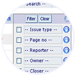

 |
||
| Filtering | You have a very simple but powerful analysis tool on the right hand side called the filter panel. This will allow you to create complex drillable reports. You can email and print the results. | |
| The check boxes allow you to aggregate any type of information and retrieve summary detail and pie chart statistics. | ||
| The drop boxes allow you to filter on any currently available piece of data. Selecting an option in the drop box automatically updates the other drop boxes so you’ll never retrieve nothing through over filtering your data. You can also simply start typing in the box which will show you a list of items that contain your text enabling rapid filtering. | ||
| Press the filter button at the top of the panel when you have completed your selection to retrieve the results. Press the clear to start from scratch and return to the full list of results. | ||
| Text Search | You can search for any text in the whole system by typing into the search box above the filter tool. Not only will this find any text entered but it will search through every attachment that contains text, whether it's a document, spreadsheet or a pdf. Selecting the check box next to the search will limit it to the current class of information you are currently looking at (eg. Issues) | |